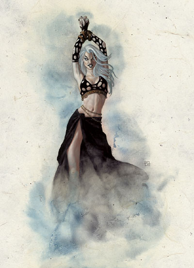
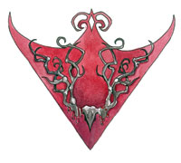

本莎芭 Beshaba （厄运女神）

费伦神系 中等神力
别称：厄运少女 Maid of Misfortune，灾厄女士 Lady Doom
圣徽：血红色背景的黑色鹿角

居住界域：毁灭与绝望之荒原 The Barrens of Doom and Despair
阵营：混乱邪恶 CE
神职：随性的恶作剧 ramdom mischief，厄运 misfortune，不幸的意外 accident
信徒：刺客，任性之人，赌徒，盗贼，虐待狂
牧师阵营：混乱中立 CN，中立邪恶 NE，混乱邪恶 CE
神域：混乱 Chaos，邪恶 Evil，宿命 Fate，机运 Luck，诡术 Trickery
喜好武器：不幸命运 Ill Fortune（九尾鞭 scourge）
本莎芭是一位心胸狭隘的恶毒女神，在费伦大陆上，惧怕她的人在数量上远比真正崇敬她的人要超出许多倍。厄运少女非常妒忌自己的姊姊，认为凡人们也应该像崇敬太摩拉那样地崇敬自己（至少也应该在口头上尊重自己）。因此，虽然许多凡人都惧怕本莎芭的力量与想法，但是却不得不邀请且欢迎她出席参加各种正式的场合 （比如婚礼或加冕礼）、运动或武术比赛、以及新生儿的命名典礼－因为如果不邀请她，便可能招来厄运少女对所有相关人士展开永不休止的报复攻击（也就是永久的厄运缠身）。
本莎芭的信徒大都是因为恐惧厄运的力量才崇拜她，而她的牧师也是透过散播恐惧的方法吸收信徒－向群众宣传本莎芭的力量、最 近被她惩罚对象的悲惨下场、教导群众如何对她献上崇敬与祭品、以及讲述如何加入教会（如果希望能够永远不够厄运侵扰的话）。本莎芭的牧师们都极小心地节制 自己，避免被残酷与施虐的欲望操纵。他们通常乐于暗中从事各种机密活动去操纵头脑简单的群众，向他们提供各种大大小小的服务－比如提供食物与奢华秘密住 所，以及提供武力好让他们对抗其他敌人（不论是教会内部亦或对外的）。
本莎芭的牧师在午夜时祈祷以获得神术，如果条件允许的话，祈求神术 之前必须对女神献祭－他们必须以本莎芭之名焚毁一瓶烈酒，并将一段黑色鹿角伸入熊熊燃烧的烈焰之中（如果同时将自己的手指伸入火中烧烤则更能取悦女神）。 本莎芭的狂热信徒会在「仲夏节」（Midsummer）与「盾集庆典」（Shieldmeet）两天举行大规模的粗暴狂欢庆典。此外，每当有重要的牧师成 员过世或某个牧师在教会内的阶级上升时，信徒们也会举行特殊的祭典－前者名为「消逝」（the Passing），是一种极少举行的虔诚仪式，信徒们会在仪式中将死者的遗体与许多点燃的蜡烛一起随河漂流而下，而后遗体将会转化成不死生物，并随机传送 到费伦大陆上的任一地点去制造大规模的骚乱；后者则名为「升阶」（the Making），仪式中充斥着低沉的鼓乐、踏着炽热火炭的舞蹈、以及各种烙印或刺青的仪式（不准使用任何法术或药剂来减缓痛苦）。许多本莎芭的牧师都兼职 盗贼、刺客、或是「机运使者」（Auspician）。
历史/与众神的关系 History/Relationship：
当原本 的机运女神太姬（Tyche）在「黎明神劫」中死去时，她破碎的两片残躯化成了两位新生的「女儿」－太摩拉与本莎芭。据说太摩拉继承了前任女神的所有善变 性格，而本莎芭则继承了太姬的所有美艳容貌，因此所有见到厄运少女的男性，如果不是被自己的欲火烧死，就是拼命地设法满足女神每个心血来潮的无理要求；相 对的，任何见到本莎芭的女性都会立刻陷入癫狂（她因此得到了「灾厄女士」的别称）。本莎芭最近拒绝了塔烙斯（Talos，毁灭之神）的同盟提议，因为她认 为对方不过是打着夺取她神职的主意。她没有任何真正的盟友，且将全部的心力都放在寻求永远毁灭姊姊的方法之上。 她也非常喜爱玩弄山达柯尔（Shaundakul，游荡之神），时常假扮成�k，以帮助之手（the Helping Hand，山达柯尔的别称）的名义在蛮野牛沙漠（Anauroch）中制造各种恶毒的灾难（比如用沙暴摧毁绿洲、弄瞎当地原住民、以及让旅人迷路）。
教义 Dogma：
所 有的人都会被厄运与不幸侵扰，只有追随本莎芭才能让避开她的力量。幸运并不是愈多愈好－因为这样一来厄运也会越来越多－真正聪明的人应该设法破坏抑制幸运 以平衡两者的力量。不论事态怎么发展，都绝对没有好转的可能性－它只会愈来愈糟，因此敬畏厄运少女的力量，赞扬她的智慧吧！将她的教导传播到费伦大陆的每 个角落，让所有凡人都服从她，并献祭以取悦她。如果她发怒了，那么所有人都会立刻遭到她的诅咒－永无止境的苦难与不幸！要努力设法让其他人也加入本莎芭信 徒的行列，这样他们才能躲开厄运的力量。当告诉其他人如何敬拜本莎芭、或如何付出代价以摆脱自身厄运（以及如何让其他人厄运缠身）之时，绝对不准捏造虚假 的事实。
--
资料来源：费伦大陆信仰与神系《Faiths & Pantheons》
译者：一凡